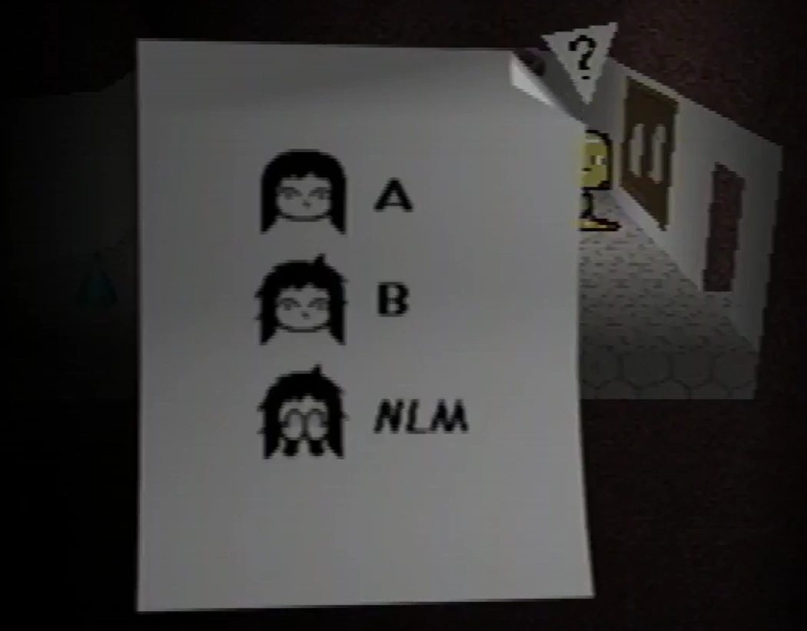

Office

{kind=link}
The office is a room in the underground complex under the Newmaker Plane. The room's title in the game's data appears to be "anna-office", according to the secret menu.
There is a phone on the desk that can be interacted with, that says "Care left the room." The phone ringing can seemingly be heard in adjacent rooms.
{kind=link}

{kind=link}
"A - B - NLM" note
There is a bulletin board on the wall that can also be interacted with. It shows various heads of Care, with "A", "B", and "NLM" written next to them, corresponding with Care's three pet forms.
Theories
The room's title suggests the office belongs to Anna. It may also be representative of the office that is mentioned in earlier gens after interacting with the Easter Egg.
The phone call is identical to the one that plays after a player that has caught Care A has left Care's room in the house. It is possible that whatever plays this message in the house also relays it to the office, where Anna may be present, being absent from the house.
| Gift Plane | Gift Plane · Even Care · Odd Care · Work Zone |
|---|---|
| Newmaker Plane | Newmaker Plane · Office · Grave room · Tool room · Quitter's Room · Child Library · Windmill · Party room · House · School |